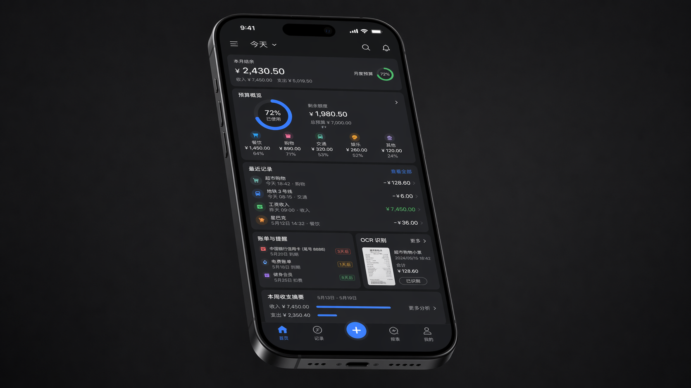
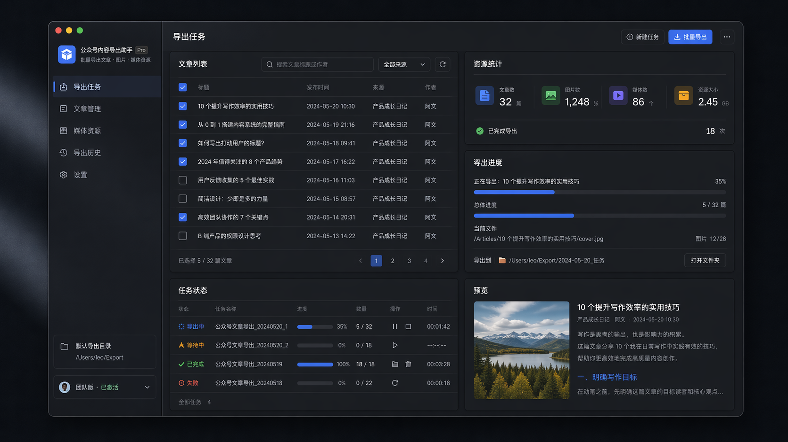
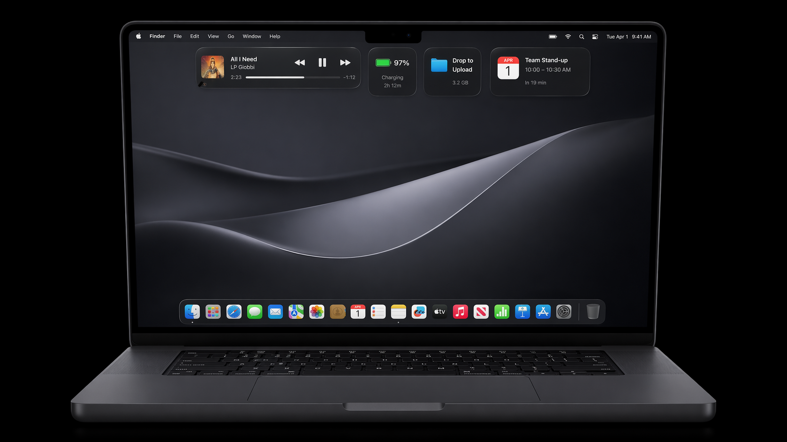
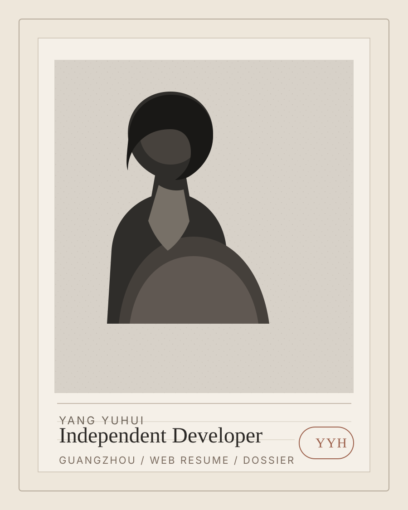

SELECTED WORKS.
精选作品

ShadowNote
iOS App · Public Repo
预算、交易、提醒与 OCR 被整合进一套完成度较高的个人管理产品里，能直接体现信息结构、功能整合与成品意识。
Repository ↗

YANG YUHUI / INDEPENDENT DEVELOPER / GUANGZHOU
把需求判断、产品结构、界面表达和代码实现， 整理成一张可以直接投递、也可以直接验证的网页。
I care less about describing ideas than about turning them into software people can actually use.
VIEW SELECTED WORKS
SELECTED WORKS.
精选作品

iOS App · Public Repo
预算、交易、提醒与 OCR 被整合进一套完成度较高的个人管理产品里，能直接体现信息结构、功能整合与成品意识。
Repository ↗

A LITTLE MANIFESTO.
一点说明
我更相信作品本身，而不是空泛的自我描述。 这也是为什么我把简历做成网页：让项目截图、仓库入口、身份信息和联系方式出现在同一条阅读路径里。
我关心需求是否真实，而不是概念是否漂亮。
我希望项目可以被打开、被使用、被验证，而不是只停留在展示图里。
我正在用持续交付和公开仓库，替代传统简历里那些空洞形容词。
EXPERIENCE.
经历
Guangzhou
持续完成软件产品与工具开发，已完成 10+ 软件 / 网站 / 工具项目，并整理出可公开展示的网页作品集。
新能源汽车工程 / 本科在读
在校阶段把主要精力投入到独立开发、项目实践与作品沉淀，而不是停留在课堂概念层。
Course Project / Operations
做过课程整理、内容提炼、流程协作与项目推进，补足执行、沟通与落地能力。
SKILLS & DISCIPLINES.
能力结构
能从真实工作流里判断问题，而不是只做概念演示。
能独立完成信息结构、界面表达、前端或客户端实现，并把项目真正交付出来。
覆盖 SwiftUI、AppKit、React、TypeScript、JavaScript 等实际项目技术栈。
能把项目整理成网页简历、README、仓库说明与可浏览的作品证据。